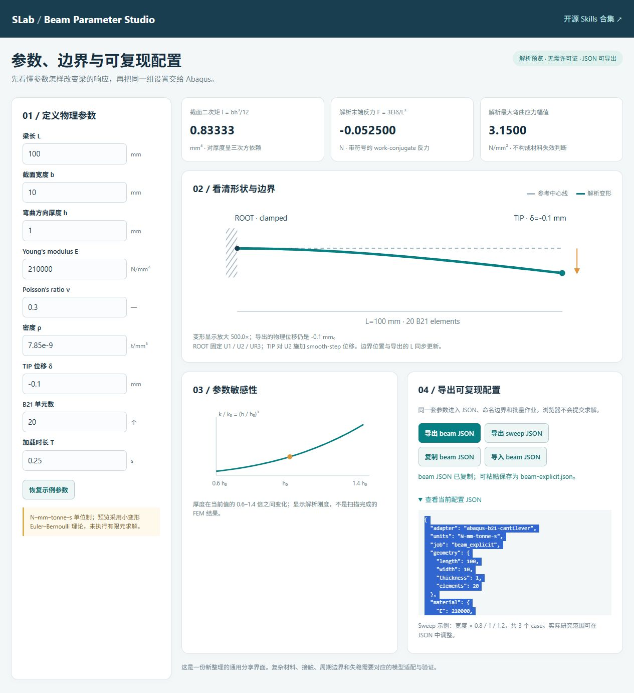
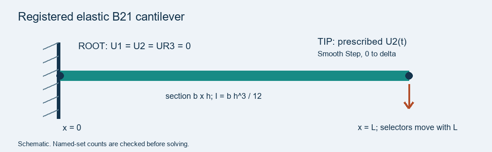
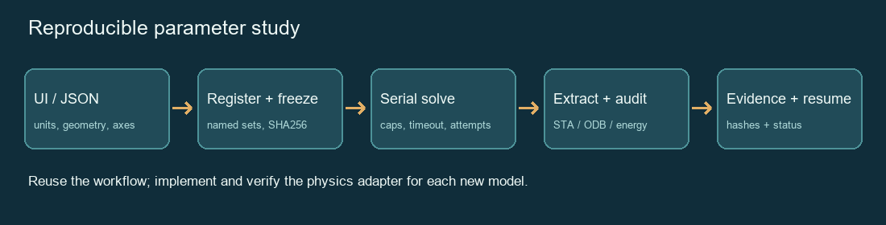

13. SLAB Skills: Install, Use, and Share Research Workflows
13.1 Background
- What is a skill? A folder containing
SKILL.mdinstructions and optional scripts, references, templates, or interfaces. Install the complete folder so that its resources remain available. See OpenAI: Build skills. - What is SLAB Skills? A public collection of 13 skills for research significance, research gaps, scientific writing, mechanics, FEM verification, and Abaqus automation.
- Goal of this guide: install a skill, run a small example, check the result, and contribute your own workflow.
Start here: GitHub repository · Skill directory · Help
13.2 Prepare Your Computer
- Open Codex and confirm that you can start a task in a local project folder.
- Open PowerShell on Windows, or a terminal on macOS/Linux.
-
Check Python:
python --versionExpected: Python 3.10 or newer. If the command is unavailable, install Python from python.org and reopen the terminal.
-
For the Git route, check Git:
git --versionIf unavailable, install it from git-scm.com. You can also use the ZIP route below without Git.
-
For actual FEM execution, confirm that you have a working Abaqus installation and license. The beam interface, input preparation, and portable checks can run without Abaqus.
Command convention: run the Python commands below from the downloaded slab-skills root folder. Enter $skill-name prompts in Codex, not in PowerShell.
13.3 Download the Collection
A. ZIP Download — No Git Required
- Open SLAB Skills Releases.
- Select v0.1.0 and download slab-skills-v0.1.0.zip under Assets.
- Extract the ZIP to a writable folder.
- Open the extracted
slab-skillsfolder. Confirm that you seeskills,tools,docs, andREADME.md. - Open a terminal in that folder.
B. Git Clone — Recommended for Contributors
- Open a terminal in the folder where you want to keep the collection.
-
Run:
git clone https://github.com/DJDeborah/slab-skills.git cd slab-skills -
Confirm that
skills/beam-parameter-interface/SKILL.mdexists. - To reproduce a published version, use
git checkout v0.1.0. For contributing new work, keep or return tomain.
13.4 Install Skills in Codex
A. Install with a Codex Prompt
- Start a Codex task with access to your local project.
-
Paste:
Use $skill-installer to install these skills from https://github.com/DJDeborah/slab-skills: - skills/beam-parameter-interface - skills/abaqus-parametric-workflow Copy each complete skill directory, including all supporting resources. Report the actual installation paths. -
Wait for the installer to finish.
- Start a fresh task and invoke
$beam-parameter-interface. - If the skill is missing, restart Codex and check the reported installation path. See OpenAI skill installation guidance.
B. Install with the Repository Script
-
In the downloaded repository root, install two selected skills:
python tools/install.py --user --skill beam-parameter-interface --skill abaqus-parametric-workflow -
To install all 13 skills instead, run:
python tools/install.py --userChoose either step 1 or step 2. The installer refuses to overwrite existing directories.
-
To install only in one project, replace the example path and run:
python tools/install.py --project "D:\my-research" --skill research-gap -
Start a fresh Codex task in that project and invoke
$research-gap.
Expected: the script prints an Installed ... line for each selected skill. This script uses ~/.agents/skills for user installation and <project>/.agents/skills for project installation. The bundled installer may use $CODEX_HOME/skills; use one installation route and avoid duplicate names. See installation details.
13.5 Verify the Installation
-
In Codex, paste:
Use $beam-parameter-interface. Read its SKILL.md and tell me which interface asset it uses. Open the interface and report its initial length, thickness, and predicted tip reaction. -
Confirm that Codex reads the intended skill directory and opens the beam interface.
-
In the repository terminal, run the portable checks:
python -m pip install -r requirements-dev.txt python tools/validate_catalog.py python -m unittest discover -s tests -v python tools/run_demo.py --out local-runs/chapter13-demo -
Inspect
local-runs/chapter13-demo/demo-summary.json.
Expected for v0.1.0: catalog validation passes, 53 tests pass, and the demo reports "pass": true. Use a fresh output folder when rerunning the demo. These checks verify structure and bounded examples; real research conclusions require additional evidence.
13.6 Try the Beam Parameter Interface
- Open the online beam interface. Alternatively, open
skills/beam-parameter-interface/assets/index.htmllocally. - Click Reset example parameters (
恢复示例参数). -
Confirm the defaults:
Parameter Value Length L 100 mm Width b 10 mm Thickness h 1 mm Young's modulus E 210,000 N/mm² Prescribed tip displacement −0.1 mm Predicted tip reaction −0.0525 N -
Change Thickness h (
弯曲方向厚度 h) from 1 to 2 mm. - Confirm that the predicted reaction becomes −0.42 N, eight times the original magnitude. The preview follows
I = b h³/12andF = 3EIδ/L³. - Set Length L to 0. Confirm that the interface shows an invalid-parameter message.
- Click Reset example parameters again.
- Click Export beam JSON (
导出 beam JSON) and savebeam-explicit.jsonin the repository root. - If download is blocked, click Copy beam JSON (
复制 beam JSON), paste into a plain-text editor, and save the same filename as UTF-8. If copying is blocked, expand the JSON panel and copy its text manually. -
Generate an Abaqus input file:
python skills/abaqus-parametric-workflow/scripts/prepare_explicit.py beam-explicit.json --out local-runs/chapter13-beam -
Open
local-runs/chapter13-beam/registration.json. Check that ROOT and TIP each select one node, ROOT constrains DOFs 1/2/6, and TIP controls DOF 2.
Expected: the output folder contains beam_explicit.inp and registration.json. The interface shows an analytical preview; generating an INP has not yet run FEM.


13.7 Run an Abaqus Parameter Sweep
A. Prepare Two Cases
-
Use the bundled sweep, which varies beam width between 8 and 10 mm:
python skills/abaqus-parametric-workflow/scripts/prepare_sweep.py skills/abaqus-parametric-workflow/assets/sweep.json --out local-runs/chapter13-sweep --max-cases 2 -
Open
local-runs/chapter13-sweep/manifest.jsonand check the two case entries. - Inspect each case's
config.json, INP, andregistration.json. -
Preview the execution plan:
python skills/abaqus-parametric-workflow/scripts/run_sweep.py local-runs/chapter13-sweep/manifest.json
Expected: two planned cases and "solver_launched": false. The output directory must be new; do not edit a frozen case to change its parameters.
B. Execute and Check Results
- Confirm that
abaqusworks in your terminal. If it is not on PATH, find your actualabaqus.batlauncher. -
Run the two cases:
python skills/abaqus-parametric-workflow/scripts/run_sweep.py local-runs/chapter13-sweep/manifest.json --execute --abaqus abaqus --max-jobs 2On Windows, replace
--abaqus abaquswith--abaqus "C:\YOUR_SIMULIA\Commands\abaqus.bat"when necessary. -
Wait for both cases to finish. The runner submits them serially.
- Open
local-runs/chapter13-sweep/summary.csv. - Confirm
state=completedandquality_pass=Truefor both cases. - Inspect each case's
attempts/001/quality.json. Check reaction error, kinetic/internal energy ratio, and artificial/internal energy ratio.
Reference values measured with the published example:
| Width | Final RF2 | Analytical RF2 | Reaction error |
|---|---|---|---|
| 8 mm | −0.04202165 N | −0.042 N | 0.05156% |
| 10 mm | −0.05252707 N | −0.0525 N | 0.05156% |
These are elastic B21 cantilever checks. For a new geometry, material, contact model, or buckling problem, implement and verify the corresponding adapter before extending the sweep. See measured validation.
C. Resume or Retry
-
Run the same plan with
--resume:python skills/abaqus-parametric-workflow/scripts/run_sweep.py local-runs/chapter13-sweep/manifest.json --execute --abaqus abaqus --max-jobs 2 --resume -
Confirm
launched=0andskipped_completed=2after two successful runs. Keep the same launcher option used above. - If a case failed, fix the environment and add
--retry-failedto the resume command. The runner preserves previous attempts. - To change parameters, edit a copy of the sweep JSON and prepare a new output directory.

13.8 Use Skills for Research Significance, Gaps, and Writing
-
Install the three research skills if they are not already installed:
python tools/install.py --user --skill research-significance --skill research-gap --skill research-writing -
Open a Codex task in your research project. Provide your question, available evidence, and relevant papers.
-
Start with significance:
Use $research-significance for this research question: [insert question]. Give three candidate contributions. For each, state the scientific or design decision it changes, supporting evidence, a rival explanation, and the cheapest discriminating test. Mark unsupported points explicitly. -
Test the gap:
Use $research-gap to test this candidate gap: [insert bounded claim]. Keep a search ledger with queries, dates, and primary sources. Build a paper-capability matrix and search for counterexamples. Distinguish not searched, not reported, and explicitly ruled out. Save the ledger and a bounded, falsifiable gap statement. -
Draft from evidence:
Use $research-writing to revise my introduction and results section. Preserve physical definitions and essential Main/SI evidence. Produce a claim-to-evidence map. Do not add experiments or conclusions that the supplied material does not support. -
Open the cited primary papers and check the passages supporting each claim.
- Keep the search ledger, evidence map, revised draft, and unresolved questions in your project folder.
Expected: inspectable artifacts and bounded claims. A fluent paragraph alone does not establish a research gap or a physical mechanism.
13.9 Create Your Own Skill
- Choose one repeatable task, such as register shell boundary regions or export force–displacement histories.
- Return to the
slab-skillsroot folder. -
Copy the template on Windows:
Copy-Item -LiteralPath "templates/skill-template" -Destination "skills/my-skill-name" -RecurseOn macOS/Linux:
cp -R templates/skill-template skills/my-skill-name. -
Edit
skills/my-skill-name/SKILL.md:--- name: my-skill-name description: Register named boundary regions and verify selected entities before FEM execution. --- -
Replace the template body with required inputs → actions → outputs → acceptance criteria → failure handling.
- Edit
agents/openai.yaml. Include$my-skill-nameindefault_prompt. - Add scripts only where useful. Put a small anonymous example in
assets/and method notes inreferences/. -
Add an entry to the
skillsarray incatalog.json:{ "name": "my-skill-name", "category": "simulation", "summary_zh": "命名边界注册与实体选择检查", "license": "MIT", "runtime": "Python 3.10+; solver-specific adapter", "verification": "State the checks actually completed and remaining limits.", "source": "Your name and any upstream source/license" }The directory's current
summary_zhfield is Chinese; the rest of your skill can be English. Use MIT only when you own the contribution or have compatible sharing rights. -
Validate and install into a fresh test destination:
python tools/validate_catalog.py python tools/install.py --dest ../slab-skill-test --skill my-skill-name -
Run one representative task in Codex. Record its inputs, outputs, acceptance result, and limitations. A boundary adapter should check expected node/face counts before solving.
13.10 Upload a Skill to GitHub
A. Fork and Pull Request — Recommended
- Sign in to GitHub and open DJDeborah/slab-skills.
- Click Fork → Create fork.
-
Clone your fork; replace
YOUR_NAMEwith your GitHub username:git clone https://github.com/YOUR_NAME/slab-skills.git slab-skills-contribution cd slab-skills-contribution git switch -c add/my-skill-name -
Copy your complete skill directory into
skills/and updatecatalog.jsonin this fork. -
Run:
python -m pip install -r requirements-dev.txt python tools/validate_catalog.py python -m unittest discover -s tests -v -
Commit the contribution:
git add skills/my-skill-name catalog.json git commit -m "Add my-skill-name with example and verification" git push -u origin add/my-skill-name -
Open your fork on GitHub and click Compare & pull request.
- Set base to
DJDeborah/slab-skills:mainand compare to your fork'sadd/my-skill-namebranch. - Describe the task, dependencies, source/license, example, completed checks, and limits. Click Create pull request.
- Respond to review comments with commits on the same branch. The PR updates automatically.
B. Browser Upload — No Git Required
- Fork the repository and create a branch in your fork.
- Open
skillsand select Add file → Upload files. - Upload the complete skill folder. Check that its directory structure is preserved.
- Update
catalog.json, commit, and open a PR to the original repository. - If folder paths are not preserved, use the Git route above.
Expected: your PR appears in the original repository and runs its automatic checks. A public repository accepts Fork/PR contributions; direct edits to the original require collaborator access. See the contribution tutorial.
13.11 Update or Replace an Installed Skill
-
In your downloaded repository, check for local changes:
git status -
Save or commit your changes before updating. On
main, run:git pull --ff-only -
Install the new version into a fresh test directory first:
python tools/install.py --dest ../slab-update-check --skill beam-parameter-interface -
Check the new version using a small example.
- Move the old installed skill directory to a backup location outside all skill search paths.
- Install the replacement with your original installation route.
- Start a fresh Codex task and check the actual loaded path.
Expected: the replacement installs without Refusing to overwrite. For reproducible research, record the release tag or commit used for each run.
13.12 Command Cheat Sheet
| Task | Command or action |
|---|---|
| Download source | git clone https://github.com/DJDeborah/slab-skills.git |
| Install all skills | python tools/install.py --user |
| Install one skill | python tools/install.py --user --skill research-gap |
| Validate directories and catalog | python tools/validate_catalog.py |
| Run portable tests | python -m unittest discover -s tests -v |
| Run research demo | python tools/run_demo.py --out local-runs/new-demo |
| Open beam interface | Beam Parameter Studio |
| Invoke a skill | Enter $skill-name in Codex |
| Start a contribution | Fork → new branch → edit → PR |
13.13 Troubleshooting
| Problem | Steps to try |
|---|---|
| Codex cannot find the skill | Check the printed installation path and SKILL.md; remove duplicate installations; restart Codex. |
Refusing to overwrite |
Test the new version separately; back up the old skill outside search paths; install again. |
No module named yaml |
Run python -m pip install -r requirements-dev.txt with the same Python used for validation. |
| JSON download or copy fails | Expand the configuration panel, copy the visible JSON, and save it as UTF-8 plain text. |
| The sweep does not run Abaqus | The default is preview only. Add --execute, check the launcher, and confirm your license works. |
Frozen hash changed |
Preserve the old run; prepare the updated configuration in a new output directory. |
| A failed case is not retried | Fix the environment, then use both --resume and --retry-failed. |
| A command fails on a path with spaces | Quote the path and run commands from the repository root. |
| FEM differs from the reference | Check units, registration, output definitions, time/mesh sensitivity, and energy history before changing tolerances. |
Validation note: v0.1.0 includes 53 passing portable tests, four passing Windows/Linux CI jobs, and two completed licensed Explicit beam cases. UI parameter changes, JSON copying, and input preparation were checked; automated download-file capture and browser file import were not verified. See the validation report.